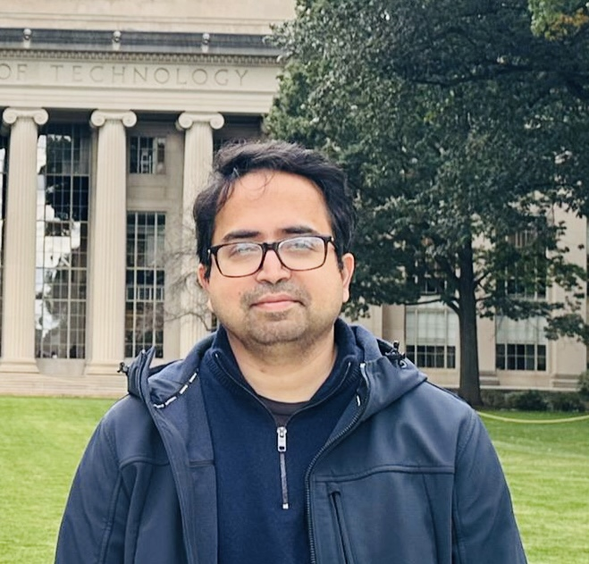

Welcome! I direct the High-Frequency Circuits Group in the Electrical Engineering Department of IIT Bombay, where I am an Assistant Professor.
I received the B.Tech degree in Electronics Engineering from Indian Institute of Technology (BHU), Varanasi, India, in 2008, and the M.S. degree from Seoul National University, Seoul, South Korea, in 2011, and the Ph.D degree from Carnegie Mellon University, PA, USA in 2018. From 2011 to 2013, I was with the Processor Development Group, Samsung Electronics, South Korea. From 2018 to January 2024, I was with Qualcomm Inc., San Diego, CA, USA, where I worked on the development of integrated radio-frequency (RF) transceivers for cellular and base-station applications. I am a Senior Member of IEEE.
My research interests are broadly on the design and development of analog/RF/millimeter-wave (mm-wave)
integrated circuits, systems and architectures for current and emerging communication technologies,
including highly integrated multi-mode transceivers for sub-6 GHz and the development of multi-element
beamforming transceivers for emerging 5G/6G applications in the mm-wave spectrum. My industry experience
has motivated a strong interest in designing circuit and system-level digital/mixed-signal calibration
techniques for robust RF transceivers resilient to analog imperfections.
My Google Scholar Page:
Link